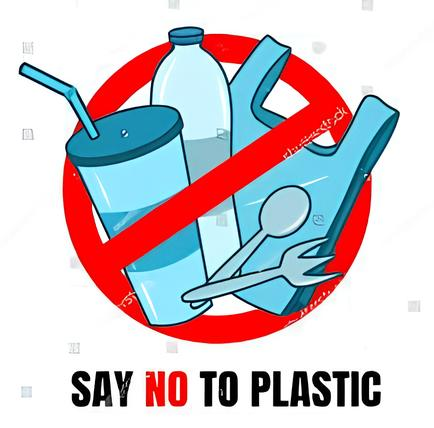

Dampak Microplastic
Mikroplastik dapat mencemari tanah dan
perairan, mempengaruhi kualitas air dan
tanah yang digunakan untuk pertanian. Hal
ini dapat mempengaruhi kualitas tanamanan
yang tumbuh di tanah tercemar
mikroplastik, dan juga dapat masuk ke
dalam air yang kita konsumsi.
Mikroplastik dapat masuk ke dalam tubuh
organisme laut, seperti ikan dan plankton.
Ini dapat mengganggu sistem pencernaan
mereka dan bahkan menyebabkan
kematian. Akumulasi mikroplastik dalam
rantai makanan juga bisa membahayakan
manusia yang mengonsumsinya.
Mikroplastik yang terkontaminasi bahan
kimia berbahaya dapat masuk ke tubuh
manusia melalui makanan dan air. Paparan
mikroplastik bisa berisiko memengaruhi
sistem pernapasan, pencernaan, dan
bahkan berpotensi menyebabkan penyakit
seperti kanker atau gangguan hormonal.
Solusi Microplastic

Edukasi Kreatif: Poster dan video tentang bahaya mikroplastik serta tips pengurangan plastik, ditampilkan di sekolah dan media sosial.
Strategi: Tempat sampah khusus mikroplastik dengan pelabelan edukatif.
Aksi Nyata: Program "Satu Minggu Bebas Plastik," daur ulang botol plastik untuk kegiatan sekolah.
Monitoring: Membentuk tim "Duta Mikroplastik" dan memberikan penghargaan bagi yang mendukung program secara konsisten.
Kesimpulan
Proyek ini menekankan pentingnya mengurangi dampak
mikroplastik melalui edukasi, aksi nyata, dan perubahan
kebiasaan. Dengan strategi yang terarah, proyek ini
berpotensi mengubah perilaku masyarakat dan
menciptakan lingkungan yang lebih sehat dan
berkelanjutan.